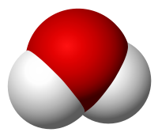

"H2O" redirects here. For other uses, see H2O (disambiguation).
Water is an inorganic compound with the chemical formula H2O. It is a transparent, tasteless, odorless,[a] and nearly colorless chemical substance, and it is the main constituent of Earth's hydrosphere and the fluids of all known living organisms (in which it acts as a solvent).
It is vital for all known forms of life, despite not providing food energy, or organic micronutrients. Its chemical formula, H2O, indicates that each of its molecules contains one oxygen and two hydrogen atoms, connected by covalent bonds. The hydrogen atoms are attached to the oxygen atom at an angle of 104.45°.